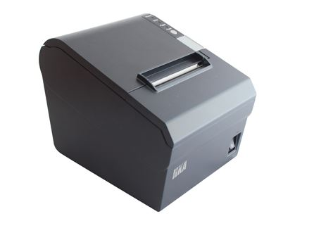
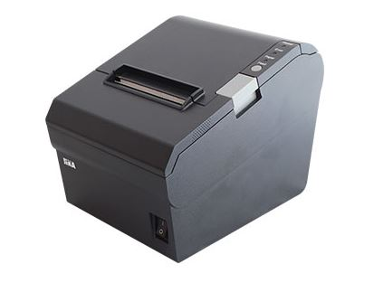
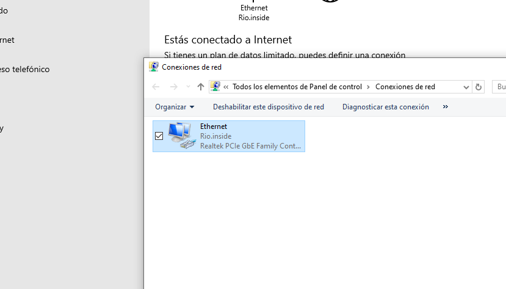
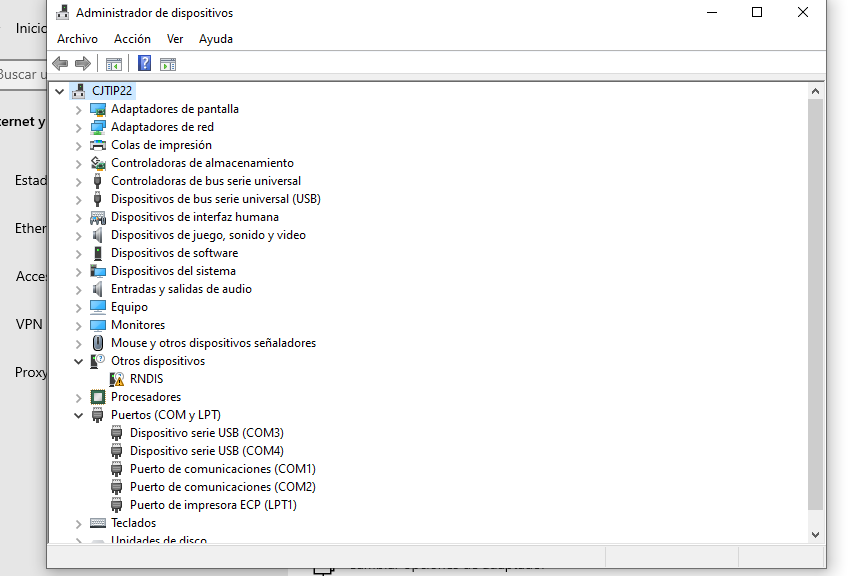
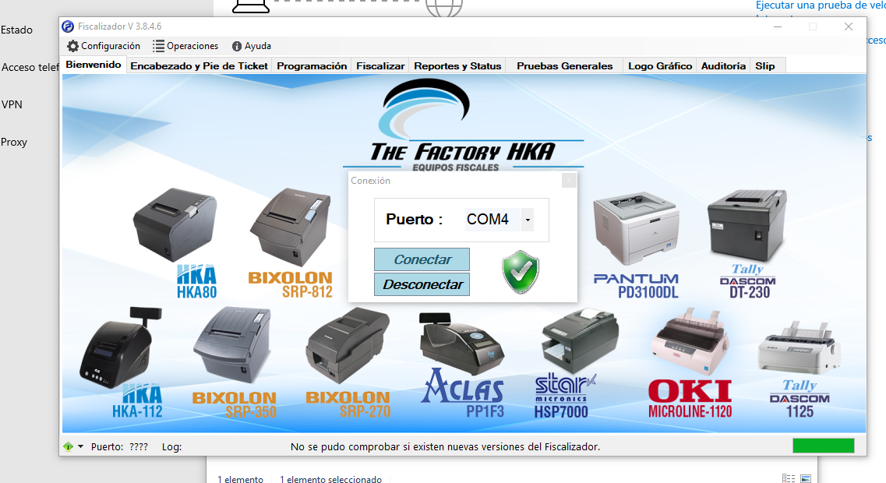
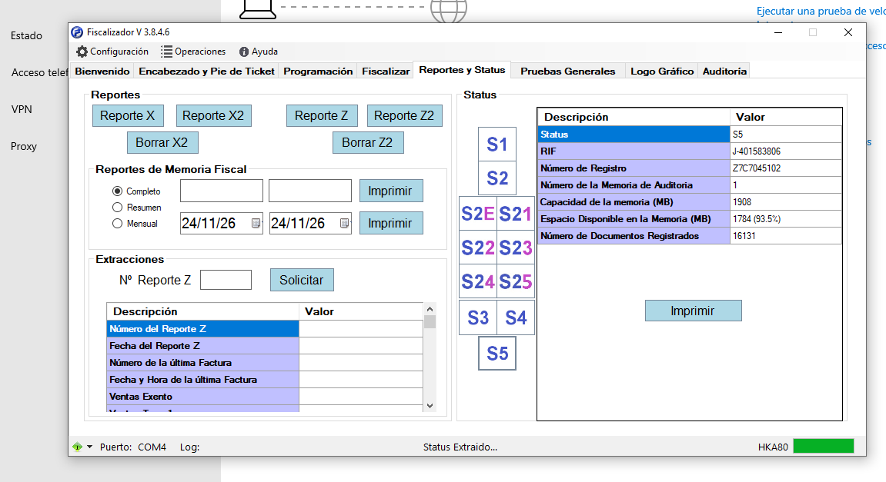
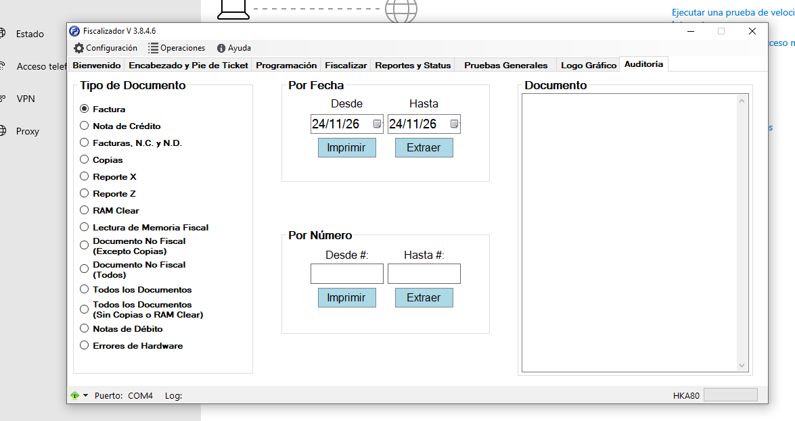
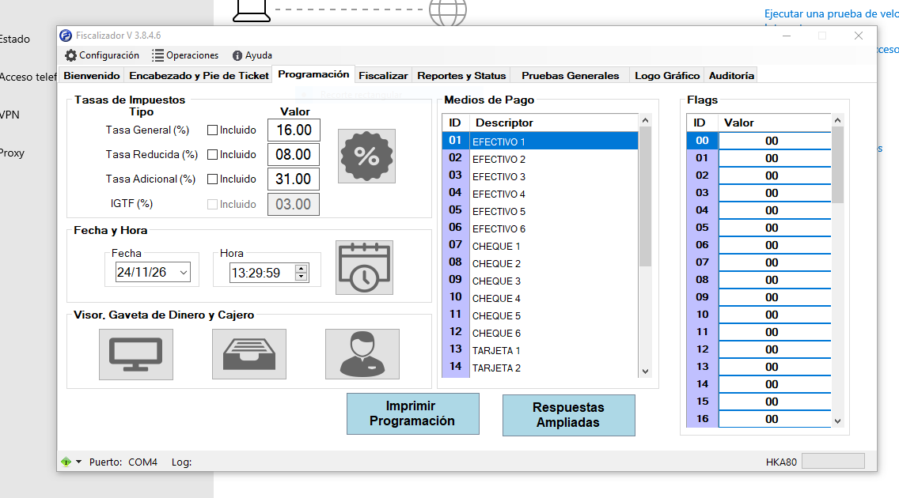

Imágenes referenciales de la impresora HKA80
Aquí se muestran imagenes referenciales del dispositivo fiscal:


Aquí se muestran imagenes referenciales del dispositivo fiscal:


En este punto vamos a deshabilitar el adaptador de red de la conexión ETHERNET para que cuando abramos el fiscalizador no nos pida actualización.
PASO 01Nos vamos a panel de control - conexiones de red y deshabilitamos el adaptador de red, para ejecutar esta operación necesitaremos tener privilegios de administrador local.

Una vez deshabilitado el adaptador de red, vamos a ubicar el puerto COM de la impresora fiscal en el Administrador de dispositivos. Tiene el nombre de Dispositivo serie USB(COM...), puede ser el puerto COM3 o el puerto COM4
PASO 02Abrimos el Administrador de dispositivos de Windows, posteriormente nos vamos al apartado Puertos (COM y LPT) y le damos a la flecha hacia abajo para desplegar todos los puertos. Una vez identificado el puerto nos vamos al fiscalizador.

Una vez identificado el puerto abrimos el fiscalizador como administrador.
PASO 01En el fiscalizador nos vamos a Configuracion en la parte superior izquierda y luego Conexión.
Posteriormente aparecerá una ventana modal, en ella seleccionamos el puerto y le damos donde dice conectar, deberia salir un escudo verde indicando que la conexión fue exitosa.
Luego de conectar, cerramos la ventalla modal en la X de color rojo en la esquina superior derecha del modal.

En este punto sacaremos un reporte de memoria fiscal el cual nos sirve para visualizar cuanto porcentaje de impresion de Z queda disponible.
PASO 01Nos vamos a la pestaña superior que dice Reportes y Status, nos va a llevar a la pantalla de la imagen(1.1: Fiscalizador - Reportes y Status).
Aquí veremos todos los reportes disponibles que se pueden sacar, en este caso pulsaremos el que dice S5 y una vez que aparezca la información referente a la memoria en la subpantalla de al lado, presionamos el botón imprimir.Si todo salio bien, deberia salir el voucher con el reporte de la información que se esta viendo en pantalla.

En este punto se saca auditoria de facturas, es decir, todas las facturas que tuvo una caja en una fecha o rango de fechas determinada.
PASO 01Nos vamos a la pestaña superior que dice Auditoria, nos va a llevar a la pantalla de la imagen(1.1: Fiscalizador - Auditoria).
Aquí veremos todos los tipos de documentos disponibles, en este caso, dejaremos tildado Factura. Posteriormente en el apartado Por Fecha seleccionaremos la fecha o rango de fechas.
Usualmente siempre solicitan auditorias de un día en especifico, por lo tanto, en el campo Por Fecha vamos a colocar la misma fecha en Desde y Hasta, que quiere decir el día completo.
Una vez tengamos la fecha confirmada le damos al botón Extraer.

Luego de haberle dado al boton extraer la impresora fiscal comienza a hacer su proceso, en la parte inferior central aparece una sucesión de puntos "........." indicando que esta haciendo su proceso.
Una vez terminado la barra de carga en la parte inferior derecha que dice HKA80 se habrá llenado por completo y en el apartado que dice Documento que tiene la región acotada en azul apareceran todas las facturas.
Posteriormente se copia todo lo que aparece en el apartado Documento y se copia a un bloc de notas para ser entregado a quien lo solicitó.

Este punto se programa la hora de la impresora fiscal que por lo general se suele adelantar a la hora del sistema.
PASO 01Luego de haberle dado al boton extraer la impresora fiscal comienza a hacer su proceso, en la parte inferior central aparece una sucesión de puntos "........." indicando que esta haciendo su proceso.
Una vez terminado la barra de carga en la parte inferior derecha que dice HKA80 se habrá llenado por completo y en el apartado que dice Documento que tiene la región acotada en azul apareceran todas las facturas.
Posteriormente se copia todo lo que aparece en el apartado Documento y se copia a un bloc de notas para ser entregado a quien lo solicitó.
